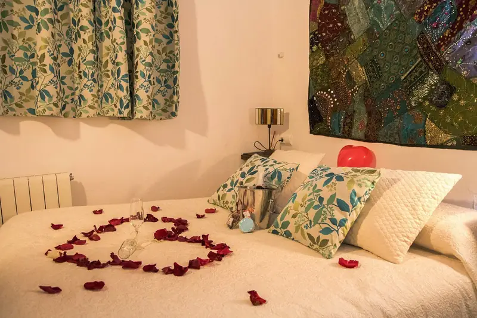
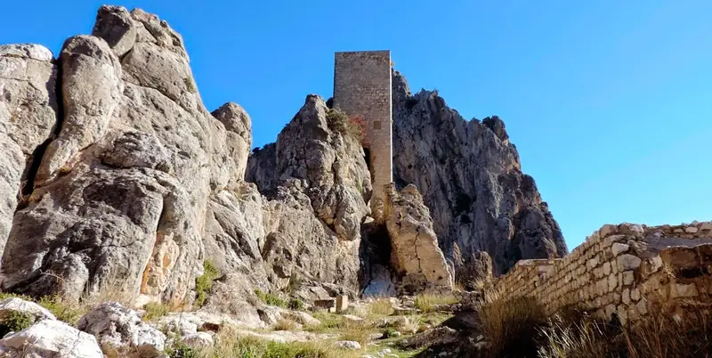
Quesada · Jaén
8 casas rurales en el corazón de la Sierra de Cazorla
Estancias románticas con chimenea y bañera de hidromasaje en el casco antiguo de Quesada.
Cazorla Rural
Tranquilidad absoluta en un pueblo de montaña
Aquí disfrutarás de la calma de un entorno natural espectacular, con la comodidad y calidad que buscas en una escapada rural. Te relajarás en una bañera de hidromasaje tras un día de sierra.
Nuestras casas están en una calle del casco antiguo de Quesada donde aún se respira el ambiente rural de antaño. Contemplarás atardeceres espectaculares, un cielo estrellado fascinante y las rutas del Parque Natural de Cazorla.
8 casas ruralesChimeneaBañera de hidromasajeParque Natural de Cazorla
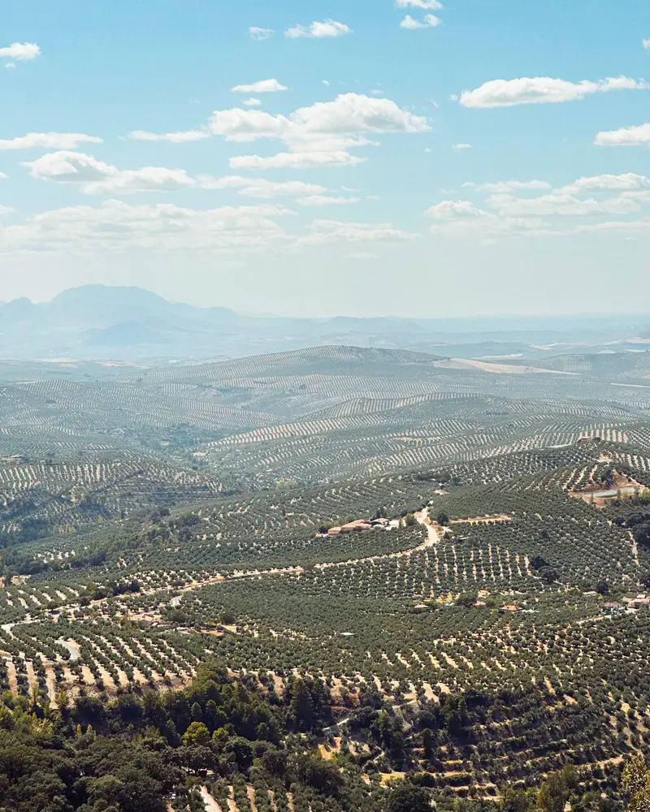
Nuestras casas rurales
8 estancias románticas pensadas para ti. Las fotos son ilustrativas y no muestran las casas reales.
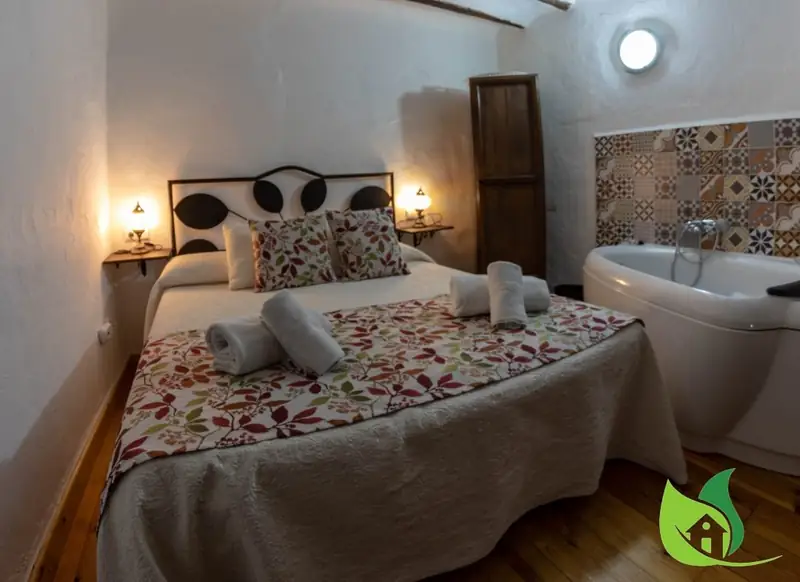
Guadiana
Casa rural dúplex para 2 personas pensada para relajarse y descansar.
Consultar por WhatsApp →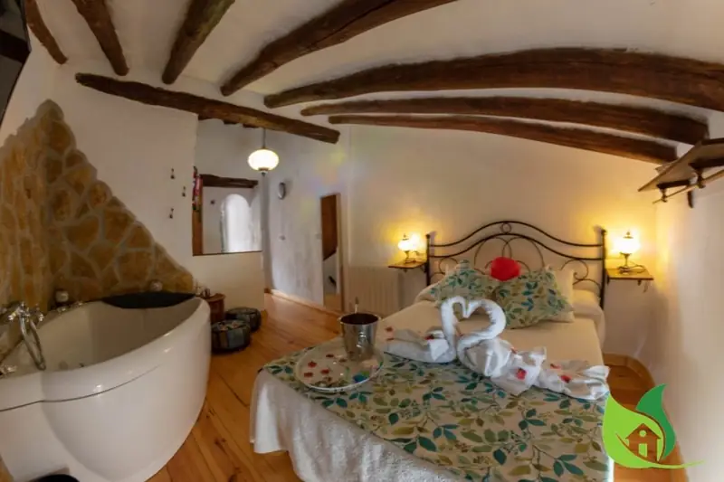
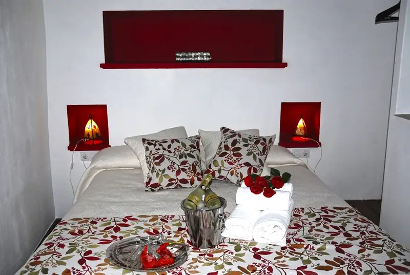
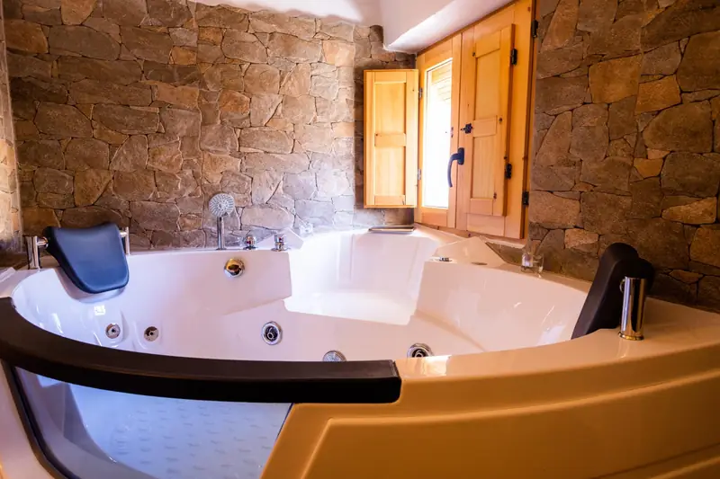
Cabañas
Casa rural rústica con dos habitaciones para descubrir la naturaleza.
Consultar por WhatsApp →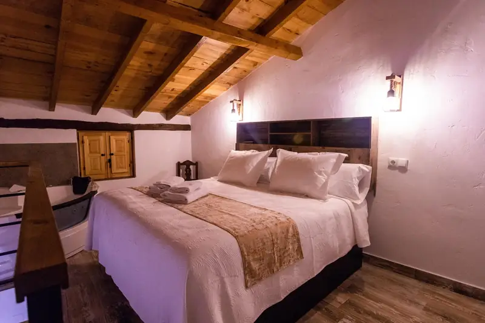
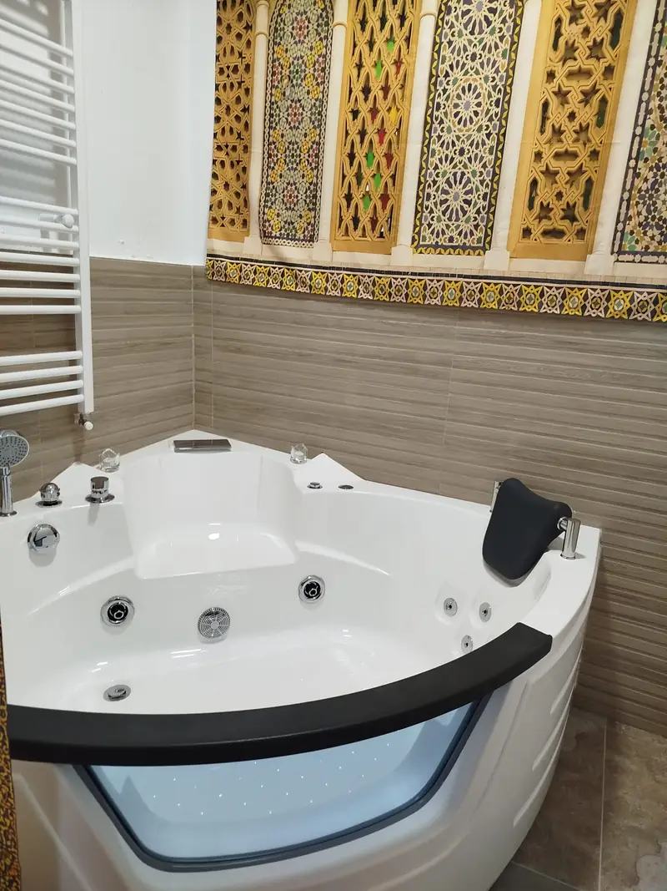
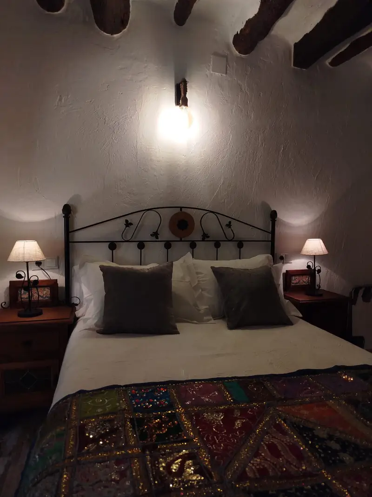
Servicios
- WiFi
- Aire acondicionado
- Calefacción
- Chimenea
- Bañera de hidromasaje
- Cocina equipada
Galería
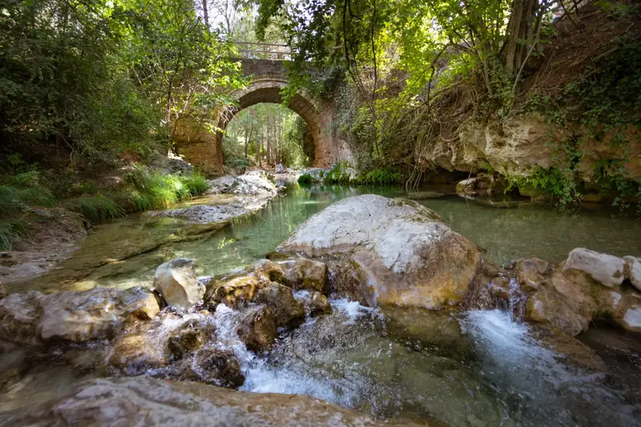
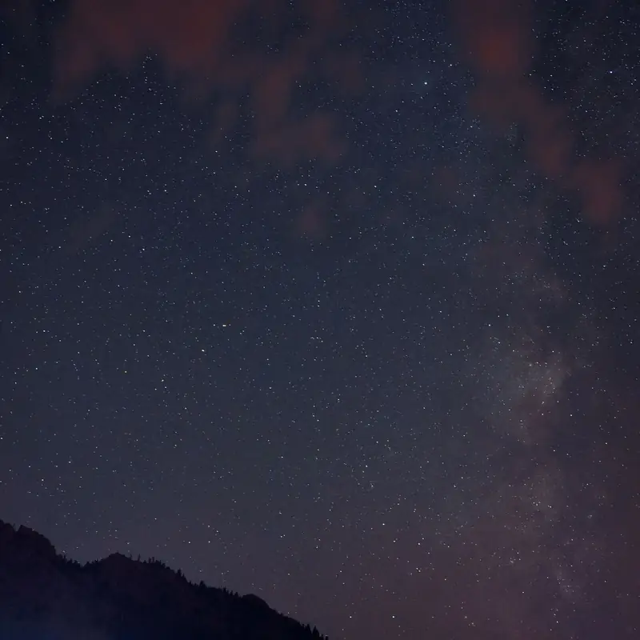
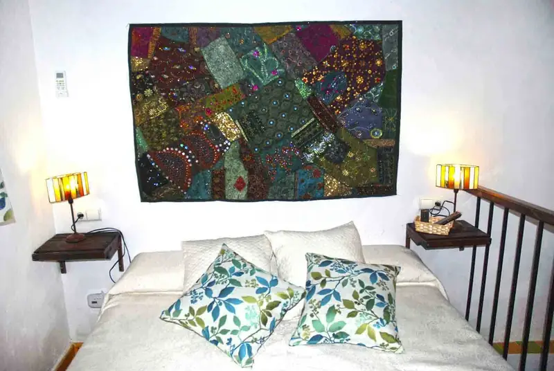
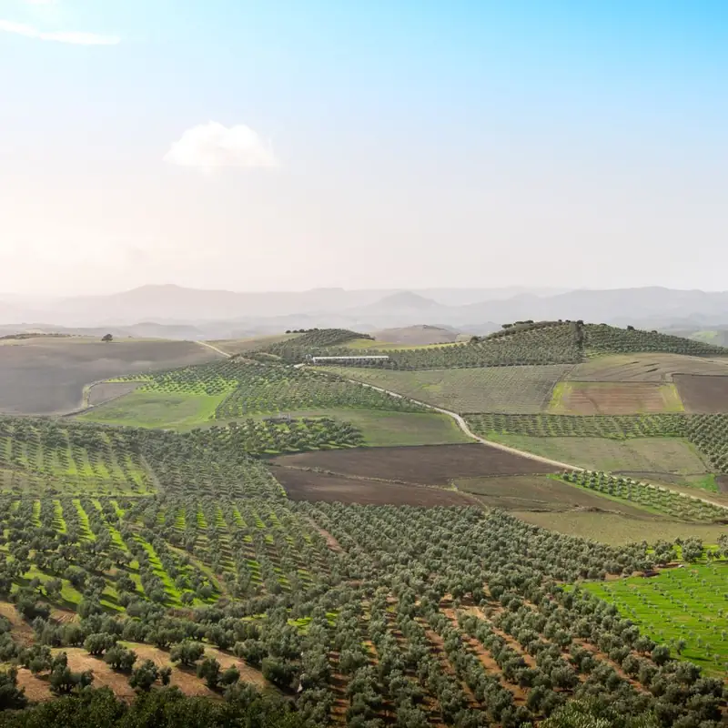
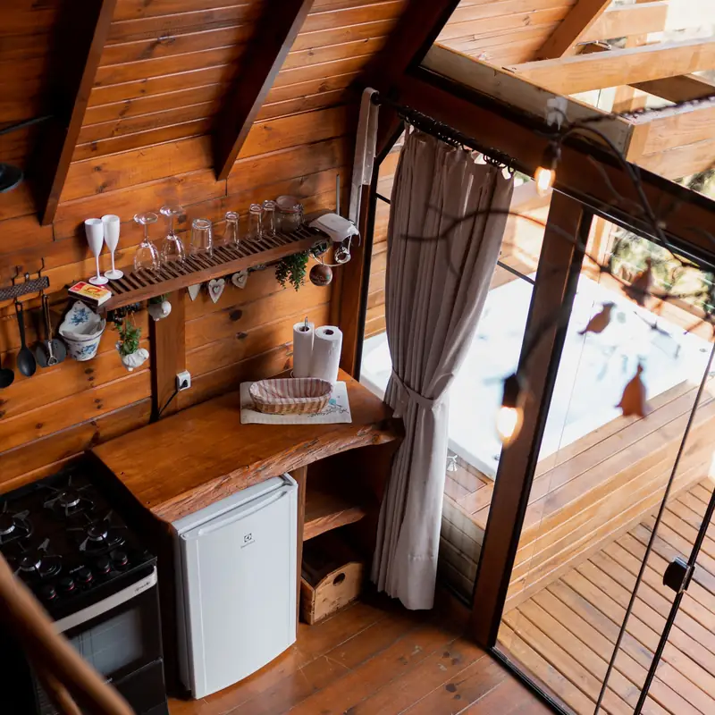
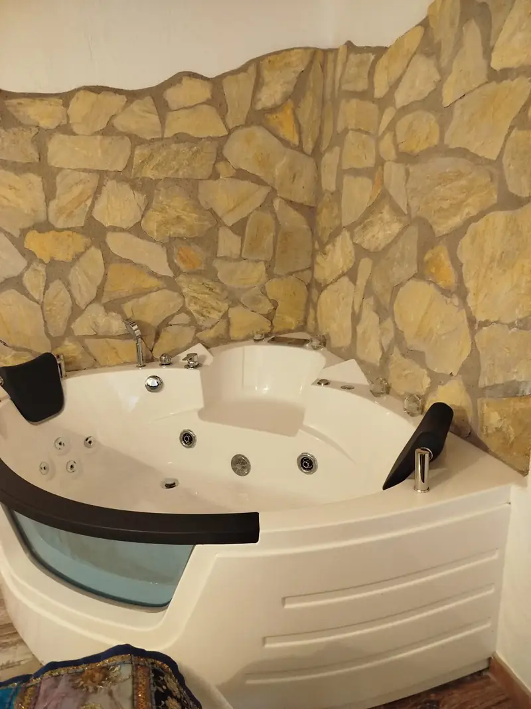
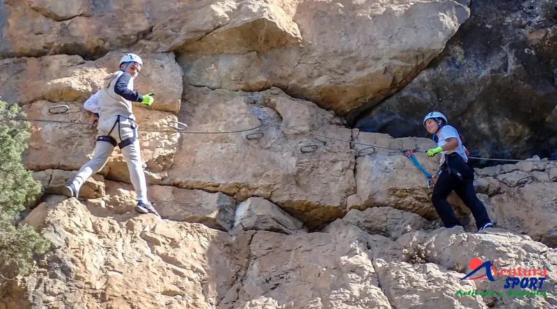
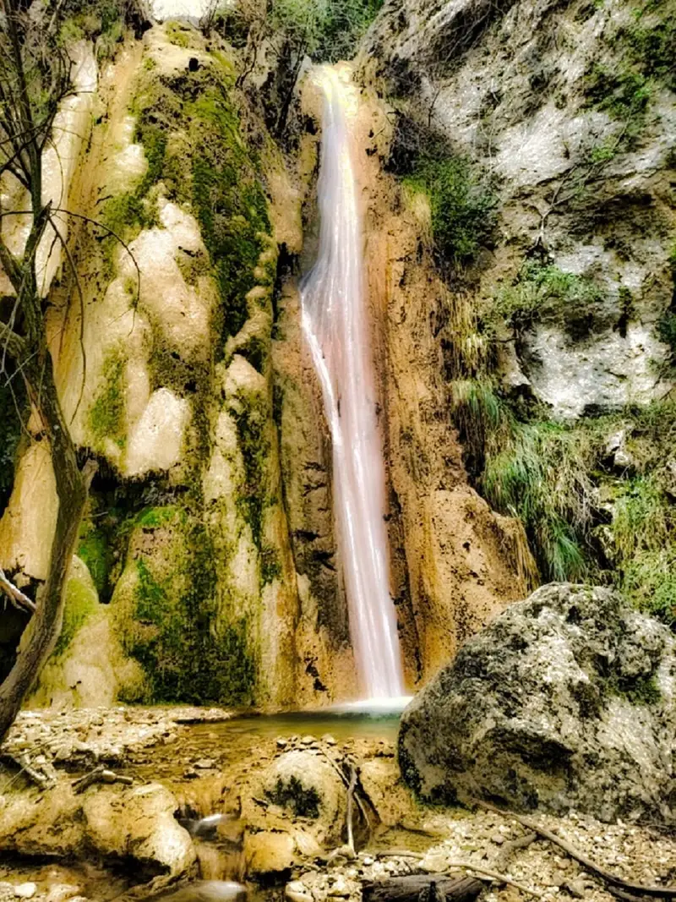
Qué hacer cerca
Senderismo, astroturismo, oleoturismo y turismo activo en el Parque Natural Sierras de Cazorla, Segura y Las Villas.
- Santuario de Tíscar
- Cueva del Agua
- Río Borosa
- Cerrada del Utrero
- Puente de las Herrerías
Dónde estamos
En la C/ Adentro (nº 15 y 44), en el casco antiguo de Quesada (Jaén), a las puertas del Parque Natural Sierras de Cazorla, Segura y Las Villas.
Contacto
C/ Adentro, 15 y 44 · 23480 Quesada (Jaén)